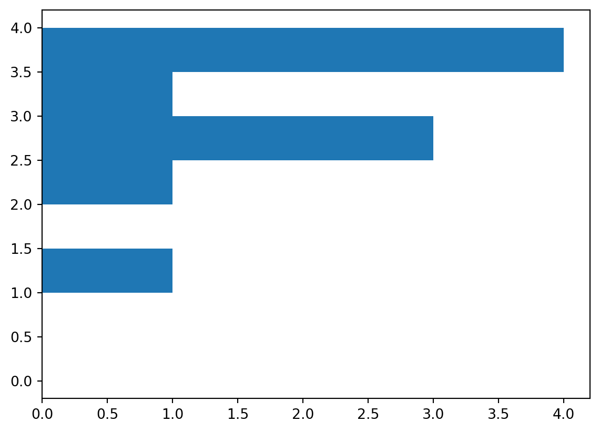
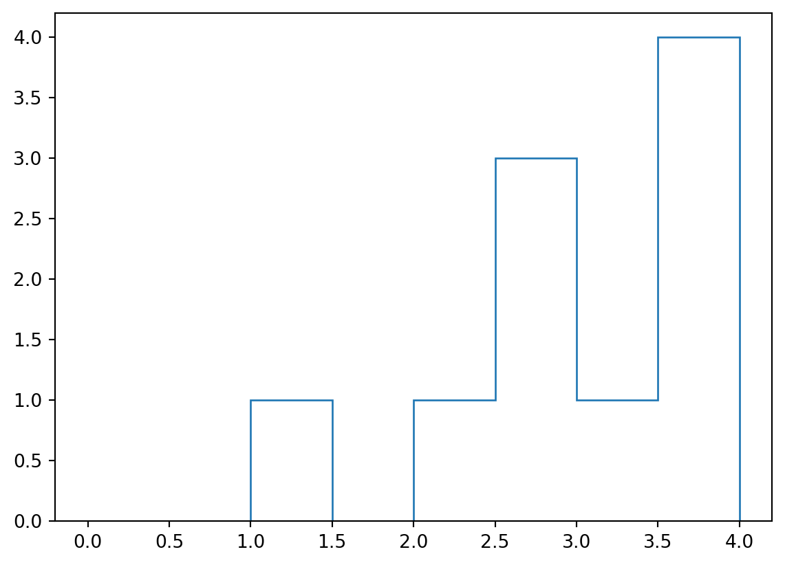
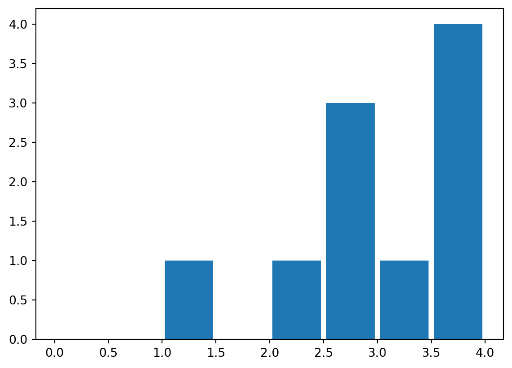
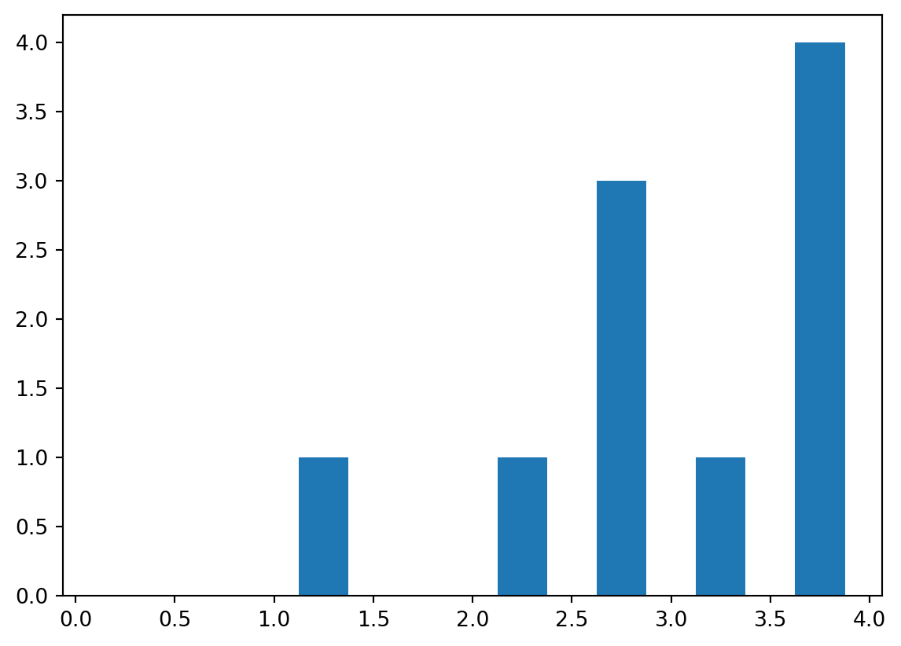
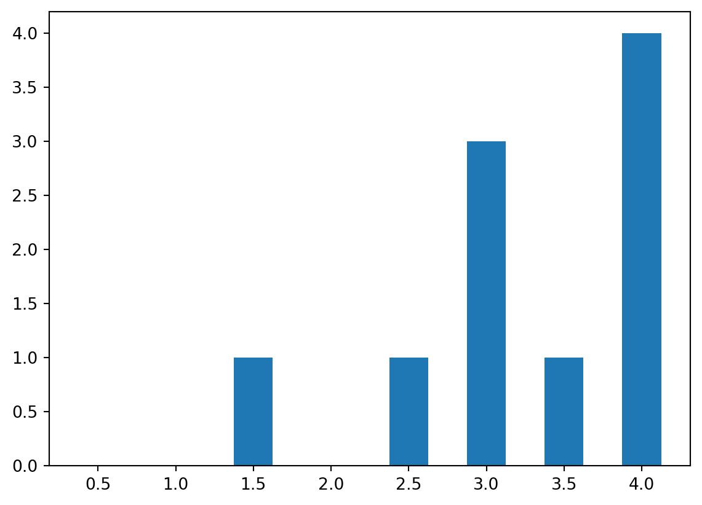
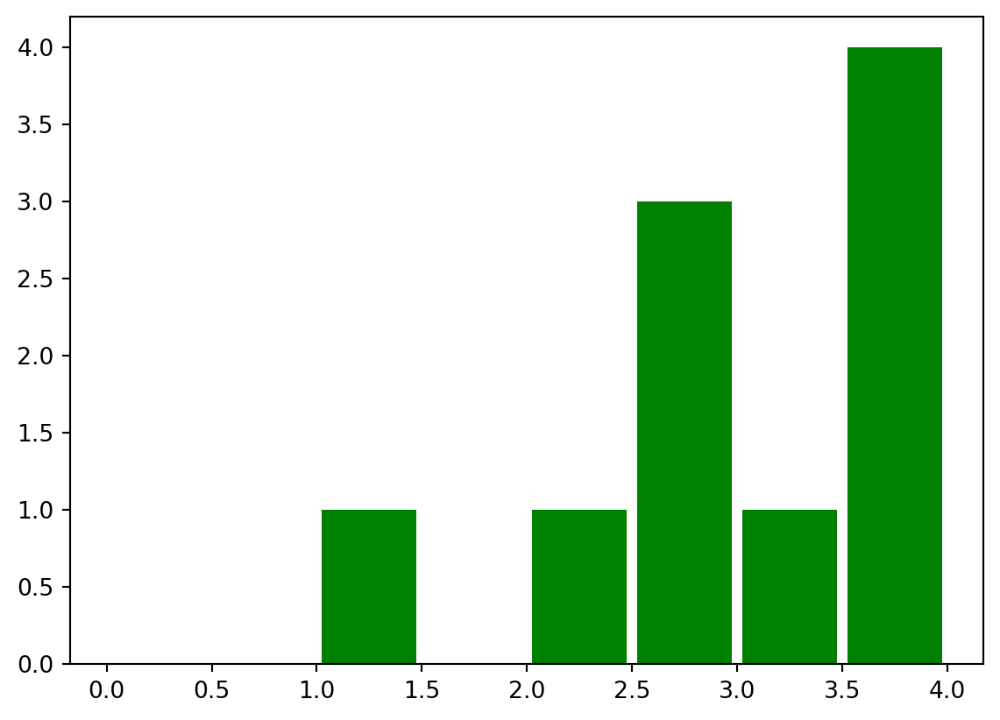
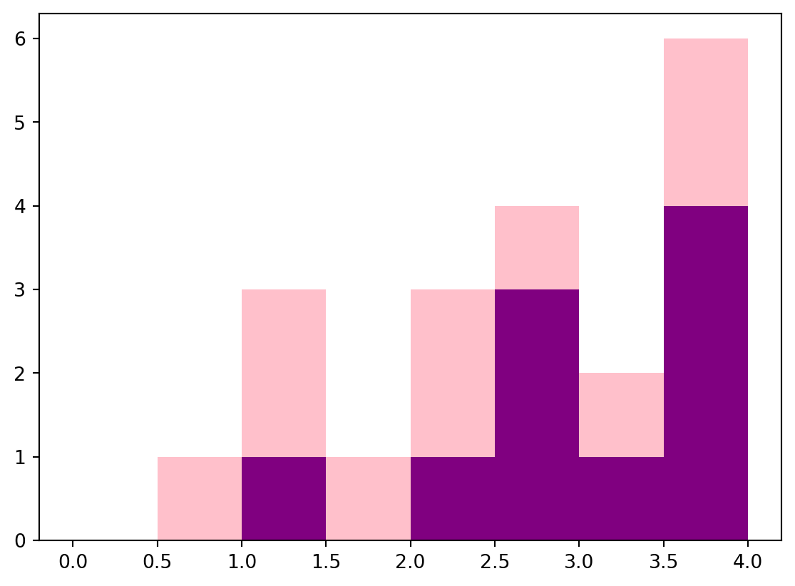

import pandas as pd
import matplotlib.pyplot as pltStorytelling with Small Data: Beginner-Friendly Visualizations in Python
Data is more useful when we can see it. In this post, you will learn how to use the pandas and matplotlib libraries in Python to create simple, clear visualizations from a small dataset.
Learning Pandas
Creating a dataset
In order to visualize data, we first need to obtain some. We will use pandas to create a small dataset.
First, we begin by importing our required libraries, in this case, pandas and matplotlib.
Now, we will decide how many features we want our dataset to have. These will become our columns.
For this example, our dataset with have 4 features: name, gpa, major, and year
Next we decide how many entries we want in our dataset. For this example, we will do only 10.
Now, to do this in code, we first create 4 lists of 10 items.
name = ["Alice", "Bob", "Charlie", "Diana", "Ethan", "Fiona", "George", "Hannah", "Isaac", "Julia"]
gpa = [3.5, 2.8, 3.9, 3.2, 2.5, 1.4, 2.9, 3.8, 2.2, 3.6]
major = ["Math", "Computer Science", "Statistics", "Math", "Computer Science", "Statistics", "Math", "Computer Science", "Statistics", "Math"]
year = ["Freshman", "Sophomore", "Junior", "Senior", "Freshman", "Sophomore", "Junior", "Senior", "Freshman", "Sophomore"]Now that we have created our features, we put them into a pandas dataset.
data = {
"name": name,
"gpa": gpa,
"major": major,
"year": year
}
df = pd.DataFrame(data)Inspecting a dataset
Now we can begin looking at our data. Before we start graphing, we can look at a small portion of our data, using the .head() function, or the entire set.
df.head()| name | gpa | major | year | |
|---|---|---|---|---|
| 0 | Alice | 3.5 | Math | Freshman |
| 1 | Bob | 2.8 | Computer Science | Sophomore |
| 2 | Charlie | 3.9 | Statistics | Junior |
| 3 | Diana | 3.2 | Math | Senior |
| 4 | Ethan | 2.5 | Computer Science | Freshman |
print(df) name gpa major year
0 Alice 3.5 Math Freshman
1 Bob 2.8 Computer Science Sophomore
2 Charlie 3.9 Statistics Junior
3 Diana 3.2 Math Senior
4 Ethan 2.5 Computer Science Freshman
5 Fiona 1.4 Statistics Sophomore
6 George 2.9 Math Junior
7 Hannah 3.8 Computer Science Senior
8 Isaac 2.2 Statistics Freshman
9 Julia 3.6 Math SophomoreAdditionally, we can look only at specific columns or features of our graph by simply indexing by column name.
df["gpa"]0 3.5
1 2.8
2 3.9
3 3.2
4 2.5
5 1.4
6 2.9
7 3.8
8 2.2
9 3.6
Name: gpa, dtype: float64This works well for one column, but what if we want to access more?
We can also look at multiple columns at the same time by using the loc function. This function finds rows or columns by their label.
Within the brackets you have the row followed by a comma, followed by the column. If you are familiar with Python slicing, then you know that : is used to obtain an entire section, in our case, a row or a column.
This allows us to look at multiple columns at once.
df.loc[:, ["name", "gpa"]]| name | gpa | |
|---|---|---|
| 0 | Alice | 3.5 |
| 1 | Bob | 2.8 |
| 2 | Charlie | 3.9 |
| 3 | Diana | 3.2 |
| 4 | Ethan | 2.5 |
| 5 | Fiona | 1.4 |
| 6 | George | 2.9 |
| 7 | Hannah | 3.8 |
| 8 | Isaac | 2.2 |
| 9 | Julia | 3.6 |
We can also look at individual rows in a dataframe. We do this by using the iloc function. This function stands for integer location. It is used by inputting the index of the row you would like to use.
df.iloc[0]name Alice
gpa 3.5
major Math
year Freshman
Name: 0, dtype: objectFinally we can access a row by checking if it fulfills a certain condition, such as one of the columns holding a specific value, and then using .loc.
df.loc[df["name"] == "Alice"]| name | gpa | major | year | |
|---|---|---|---|---|
| 0 | Alice | 3.5 | Math | Freshman |
This actually returns a pandas Series instead of pandas DataFrame, but the specifics of Pandas are not important for this tutorial, so we will ignore this.
With this basic pandas knowledge at our disposal, we can now begin learning how to visualize our data.
Visualizing
In this tutorial, visualization will be done using matplotlib.
First we will show how you can plot a single feature.
Histogram
The first one we will be showing is a histogram, in which we will look at the distribution of gpa.
This will be achieved by using plt.hist(), which will create histogram of our data for us. To get it to plot only the gpa’s we will call all the information from the gpa column.
plt.hist(df["gpa"])(array([1., 0., 0., 1., 1., 1., 1., 1., 2., 2.]),
array([1.4 , 1.65, 1.9 , 2.15, 2.4 , 2.65, 2.9 , 3.15, 3.4 , 3.65, 3.9 ]),
<BarContainer object of 10 artists>)
However, you may notice that this graph doesn’t look very nice. It ranges from 1.4 to 3.9. This is because we haven’t specified the optional ‘bin’ and ‘range’ parameter. If bin isn’t specified then matplotlib automatically create 10 evenly spaced bins. If range isn’t specified, then it uses the natural min and max of your data.
However, we know that gpas can range from 0.0 to 4.0, thus we can adjust.
plt.hist(df["gpa"],range=(0.0,4.0))(array([0., 0., 0., 1., 0., 1., 2., 1., 2., 3.]),
array([0. , 0.4, 0.8, 1.2, 1.6, 2. , 2.4, 2.8, 3.2, 3.6, 4. ]),
<BarContainer object of 10 artists>)
Now, our data is more accurately represented. Since we have the range down, lets see what it looks like with different amounts of bins
plt.hist(df["gpa"],range=(0.0,4.0),bins=4)(array([0., 1., 4., 5.]),
array([0., 1., 2., 3., 4.]),
<BarContainer object of 4 artists>)
plt.hist(df["gpa"],range=(0.0,4.0),bins=8)(array([0., 0., 1., 0., 1., 3., 1., 4.]),
array([0. , 0.5, 1. , 1.5, 2. , 2.5, 3. , 3.5, 4. ]),
<BarContainer object of 8 artists>)
These are not the only options for histograms. What if we want to make the bars go horizontal instead of vertical? That can be done by specifying the ‘orientation’ parameter to be horizontal. (By default it is vertical)
plt.hist(df["gpa"],range=(0.0,4.0),bins=8,orientation='horizontal')(array([0., 0., 1., 0., 1., 3., 1., 4.]),
array([0. , 0.5, 1. , 1.5, 2. , 2.5, 3. , 3.5, 4. ]),
<BarContainer object of 8 artists>)
Currently, the y-axis shows the count for how many values fall into each bin. We can change this to show what percentage of the data falls within each bin by specifying the density parameter.
plt.hist(df["gpa"],range=(0.0,4.0),bins=8, density = True)(array([0. , 0. , 0.2, 0. , 0.2, 0.6, 0.2, 0.8]),
array([0. , 0.5, 1. , 1.5, 2. , 2.5, 3. , 3.5, 4. ]),
<BarContainer object of 8 artists>)At first glance, this looks like it doesn’t show the probabilities correctly. After all, .2+.2+.6+.2+.8 != 1, in fact, it equals 2. This is because You need to factor in, not only the height of the bins, but the width as well. Since each bin is 0.5 units long, when we multiply each bin’s height by 0.5, and then add them together, we get 1.
Each bin’s area is what specifies the percentage of data within that bin. We can double check this ourselves. For example, by our math, 40% of our students should have gpas in the range of 3.5-4.0.
df["gpa"]0 3.5
1 2.8
2 3.9
3 3.2
4 2.5
5 1.4
6 2.9
7 3.8
8 2.2
9 3.6
Name: gpa, dtype: float64Upon looking, we can confirm that there are four students in this range, with grades of 3.5, 3.6, 3.8, and 3.9.
Now that the data is shown and organized correctly in the graph, we can make it look exactly how we want.
The next parameter we are going to look at is ‘histtype,’ which specifies which type of bars you want for your histogram. There are four options, bar, (which is the default one we’ve been using), step, stepfilled, and barstacked. We will look at each.
plt.hist(df["gpa"],range=(0.0,4.0),bins=8, histtype = 'step')(array([0., 0., 1., 0., 1., 3., 1., 4.]),
array([0. , 0.5, 1. , 1.5, 2. , 2.5, 3. , 3.5, 4. ]),
[<matplotlib.patches.Polygon at 0x279d1855550>])
plt.hist(df["gpa"],range=(0.0,4.0),bins=8, histtype = 'stepfilled')(array([0., 0., 1., 0., 1., 3., 1., 4.]),
array([0. , 0.5, 1. , 1.5, 2. , 2.5, 3. , 3.5, 4. ]),
[<matplotlib.patches.Polygon at 0x279d54b9b50>])
Now, at first glance it looks like it is no different from the normal ‘bars’ histtype. The difference becomes more noticeable once we color in the edge lines, which by default are not shown.
plt.hist(df["gpa"],range=(0.0,4.0),bins=8, histtype = 'bar', edgecolor='black')(array([0., 0., 1., 0., 1., 3., 1., 4.]),
array([0. , 0.5, 1. , 1.5, 2. , 2.5, 3. , 3.5, 4. ]),
<BarContainer object of 8 artists>)
plt.hist(df["gpa"],range=(0.0,4.0),bins=8, histtype = 'stepfilled', edgecolor = 'black')(array([0., 0., 1., 0., 1., 3., 1., 4.]),
array([0. , 0.5, 1. , 1.5, 2. , 2.5, 3. , 3.5, 4. ]),
[<matplotlib.patches.Polygon at 0x279d59aa9c0>])Now, the barstacked parameter is different, as it stacks bars from multiple datasets on top of each other. Seeing as we are only using one dataset, in order to accurately show the execution of this parameter, we need to create some more data. Since we only care about a single feature, gpa, we will make it a simple pandas series.
more_data = pd.Series([2.3, 3.8, 1.4, 2.9, 3.5, 1.8, 2.1, 3.0, 1.2, 0.9])Now we can properly call histtype with barstacked.
plt.hist([df["gpa"],more_data],range=(0.0,4.0),bins=8, histtype = 'barstacked')(array([[0., 0., 1., 0., 1., 3., 1., 4.],
[0., 1., 3., 1., 3., 4., 2., 6.]]),
array([0. , 0.5, 1. , 1.5, 2. , 2.5, 3. , 3.5, 4. ]),
<a list of 2 BarContainer objects>)
Now, what if we don’t want our bars to be touching, what if we want some space? Then we can change the ‘rwidth’ parameter. Naturally it defaults to 1, which makes the bars touch, by reducing that number we can can increase the space in between the bars.
plt.hist(df["gpa"],range=(0.0,4.0),bins=8, histtype = 'bar', rwidth = 0.9)(array([0., 0., 1., 0., 1., 3., 1., 4.]),
array([0. , 0.5, 1. , 1.5, 2. , 2.5, 3. , 3.5, 4. ]),
<BarContainer object of 8 artists>)
plt.hist(df["gpa"],range=(0.0,4.0),bins=8, histtype = 'bar', rwidth = 0.5)(array([0., 0., 1., 0., 1., 3., 1., 4.]),
array([0. , 0.5, 1. , 1.5, 2. , 2.5, 3. , 3.5, 4. ]),
<BarContainer object of 8 artists>)
With these resized bars, they might not look as good being in the middle of their section, this is why we can move them around using the ‘align’ parameter. By default, it is set to ‘mid,’ however, we can specify to align left or right.
plt.hist(df["gpa"],range=(0.0,4.0),bins=8, histtype = 'bar', rwidth = 0.5, align = 'left')(array([0., 0., 1., 0., 1., 3., 1., 4.]),
array([0. , 0.5, 1. , 1.5, 2. , 2.5, 3. , 3.5, 4. ]),
<BarContainer object of 8 artists>)plt.hist(df["gpa"],range=(0.0,4.0),bins=8, histtype = 'bar', rwidth = 0.5, align = 'right')(array([0., 0., 1., 0., 1., 3., 1., 4.]),
array([0. , 0.5, 1. , 1.5, 2. , 2.5, 3. , 3.5, 4. ]),
<BarContainer object of 8 artists>)
Now that we have our data where we want it to be, we can choose what color to portray it in. Sometimes blue isn’t always the right choice. We can specify this color by using the ‘color’ parameter.
plt.hist(df["gpa"],range=(0.0,4.0),bins=8, histtype = 'bar', rwidth = 0.9, color = "green")(array([0., 0., 1., 0., 1., 3., 1., 4.]),
array([0. , 0.5, 1. , 1.5, 2. , 2.5, 3. , 3.5, 4. ]),
<BarContainer object of 8 artists>)
What if we have a scenario with multiple datasets, and want to specify colors for each? Then we simply puts the colors in a list that is in the same order as the list of datasets we pass in.
plt.hist([df["gpa"],more_data],range=(0.0,4.0),bins=8, histtype = 'barstacked', color=["purple", "pink"])(array([[0., 0., 1., 0., 1., 3., 1., 4.],
[0., 1., 3., 1., 3., 4., 2., 6.]]),
array([0. , 0.5, 1. , 1.5, 2. , 2.5, 3. , 3.5, 4. ]),
<a list of 2 BarContainer objects>)
However, it is not very obvious which dataset belongs to which bars. To clarify this, we can use the label parameter. We can do this similarly to how we did colors, by inputting a list that corresponds to the inputted datasets.
This parameter is a bit more complicated than all of our other parameters though, as it requires more than just manipulating the hist function itself. In addition, we have to call the legend function from matplotlib itself. This is followed by the show function, to ensure the legend appears on our graph with our labels.
plt.hist([df["gpa"],more_data],range=(0.0,4.0),bins=8, histtype = 'barstacked', color=["purple", "pink"], label=["Morning Class","Evening Class"])
plt.legend()
plt.show()
We could even make our graph more intricate by using matplotlib’s label function to specify the label for the x-axis and the y-axis.
plt.hist([df["gpa"],more_data],range=(0.0,4.0),bins=8, histtype = 'barstacked', color=["purple", "pink"], label=["Morning Class","Evening Class"])
plt.xlabel("GPA")
plt.ylabel("Count")
plt.legend()
plt.show()
This wraps up the most important details to know about histograms. Next we will move on to ____